Creative developers · Selected work 2026
LUMERA Creative
Websites that unfold as you scroll.
Lumera Creative
We design and build cinematic, scroll-driven websites. Film that plays as you move, chapters that pin and turn, and a real, working site underneath.
01 · Concept redesign · 2026
rōk coffee and tea
Ceremonial Uji matcha, four cafés across Los Angeles.
A one-page site built around a single pour. Scroll down and matcha fills the cup until it overflows. Scroll back up and it drains away. Below the pour, a pinned story walks through all four cafés on a route map, and a 3D view takes the rōk x Fellow travel mug kit apart, piece by piece.
- Scroll-scrubbed hero film, with a still version for reduced motion
- Pinned locations story with a route map drawn from real addresses
- 3D exploded product view, rendered in Blender, in four colors
- Checked at 21 screen sizes, from a 360px phone to a 2560px monitor
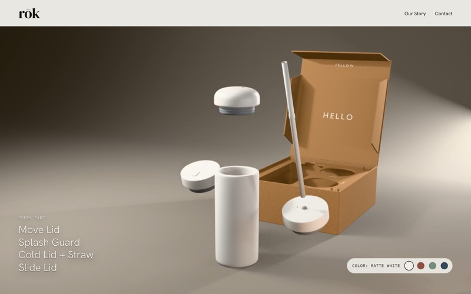
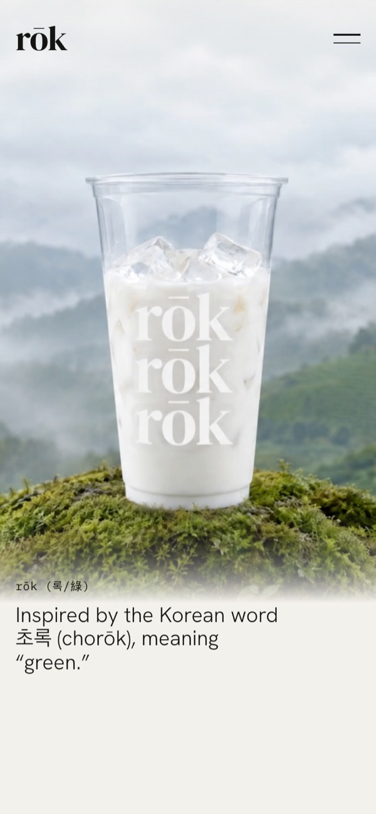
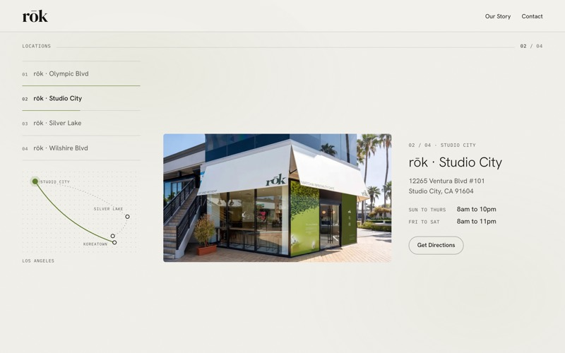
02 · Concept redesign · 2026
Lenny's Casita
Mexicali street food, glatt kosher, on Pico Boulevard.
A night at the Casita, told in chapters. The opening is a short film that moves with your scroll: dusk on Pico, the bar waking up, steaks off the grill. After that the menu becomes a tour of six plates, and every cocktail repaints the whole page in its own color.
- Scroll-driven film hero in five scenes
- Cocktail chapters that change the page color drink by drink
- Live “open now” status from the real opening hours
- Custom-colored interactive map, with a still image as backup
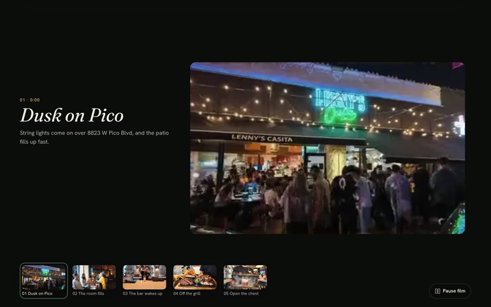
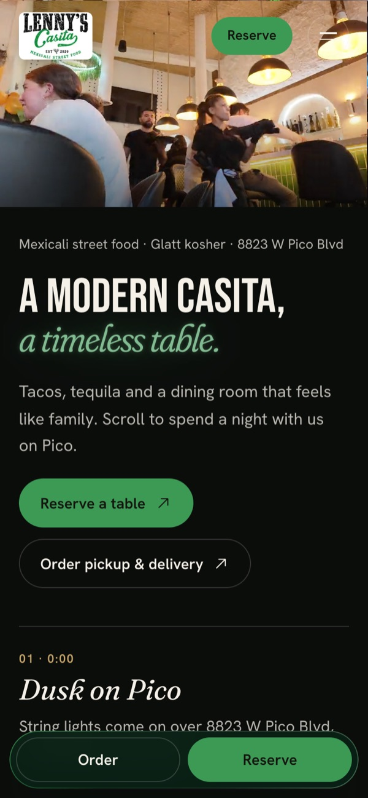
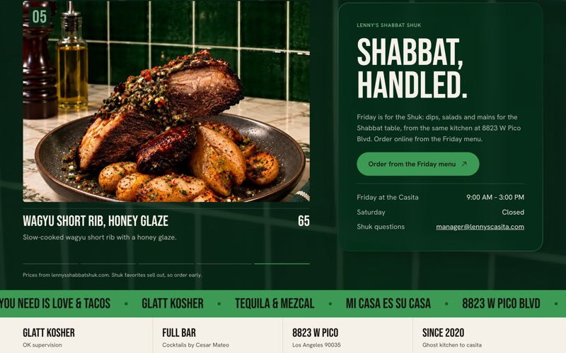
03 · Concept redesign · 2026
Stagger Coffee
Coffee and matcha in Koreatown. Balance the unbalanced.
A calm, editorial site for a café that sells calm. It opens on iced matcha and an oversized headline, then the signature menu turns drink by drink with big numerals. The matcha and coffee stories each get their own chapter, from Uji leaf to whole bean.
- Pinned signature menu: five drinks, one scroll
- Dark matcha ritual chapter, from origin to shop
- Seven-step coffee story, from bean to bag
- Shop, press and visit sections with a map
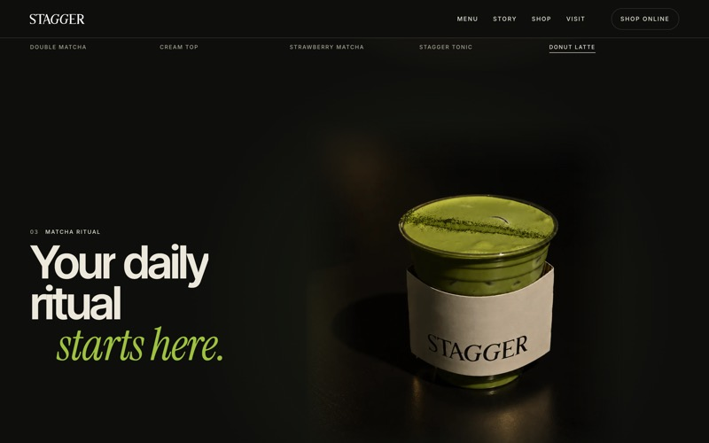
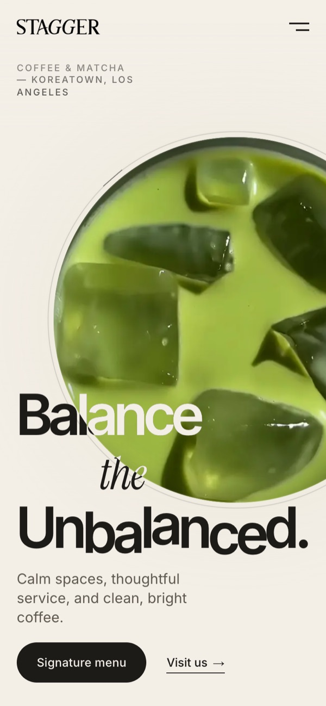
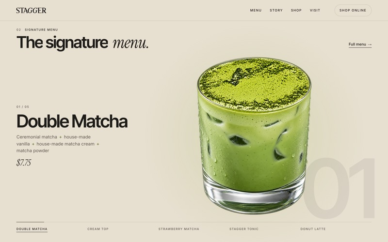
04 · Concept redesign · 2026
Motiq
Coffee, matcha and brunch, upstairs on Olympic in Koreatown.
A warm, dark site for a café that is also a full kitchen. It opens on a matcha pour behind “Whisked. Pulled. Poured.”, then the signature cream tops turn one at a time with big numerals. The espresso gets documented the way a roastery would, and the brunch and pasta menus play out plate by plate.
- Hero film behind a three-word headline
- Pinned cream-top chapter: three signature drinks, one scroll
- Espresso chapter that documents two beans, Bright and Bold
- Brunch and pasta menus told plate by plate
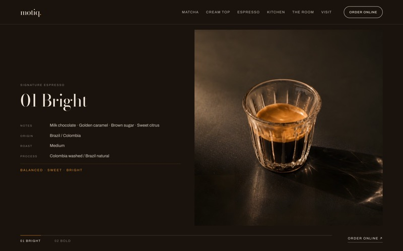
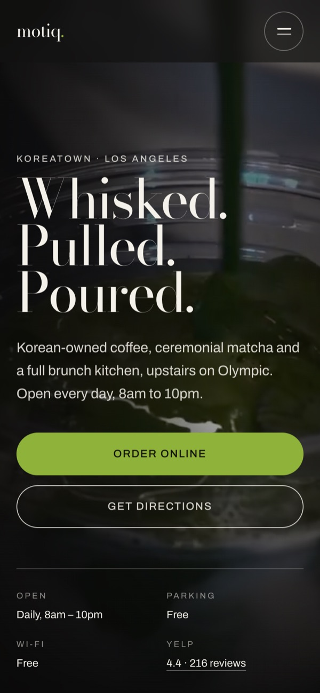
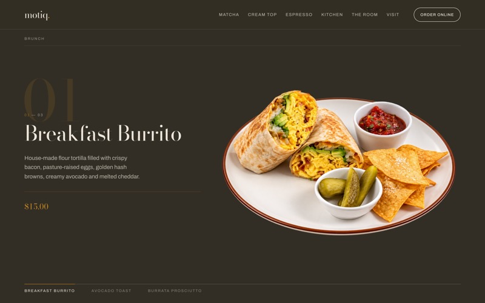
More frames
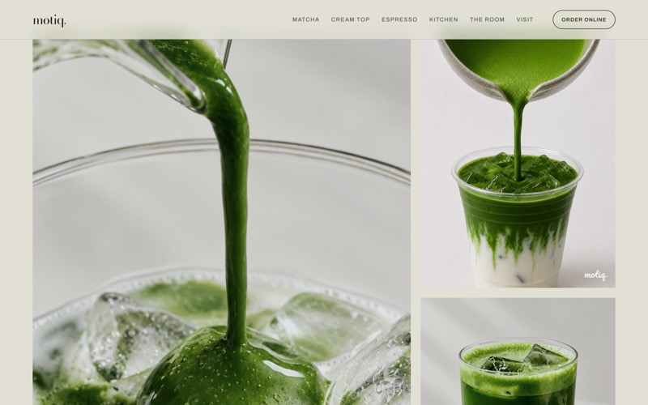
MotiqCeremonial matcha
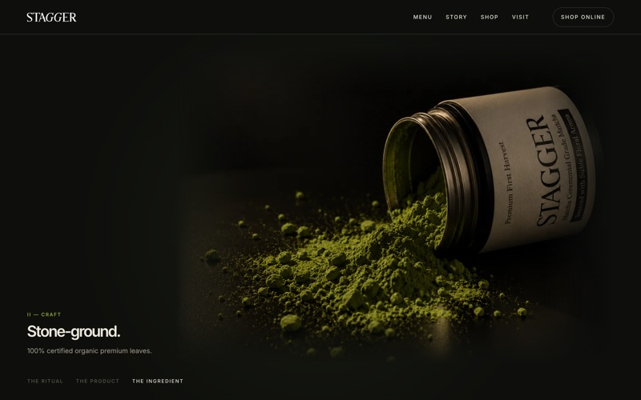
StaggerStone-ground
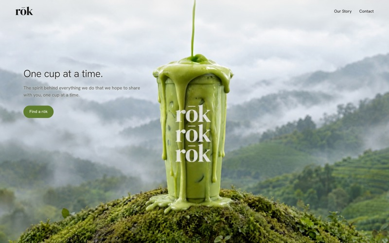
rōkThe overflow
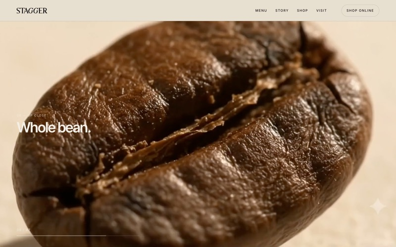
StaggerWhole bean
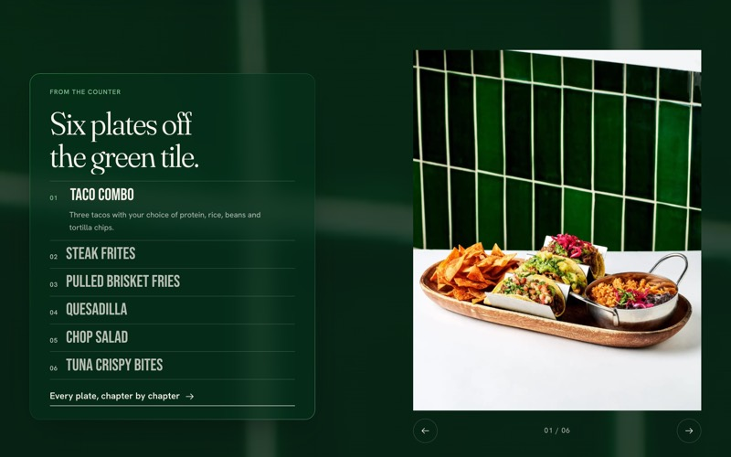
Lenny's CasitaSix plates
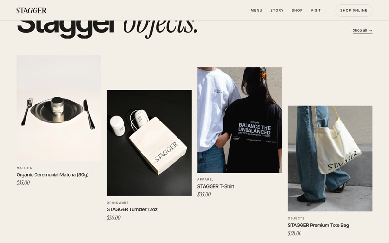
StaggerShop
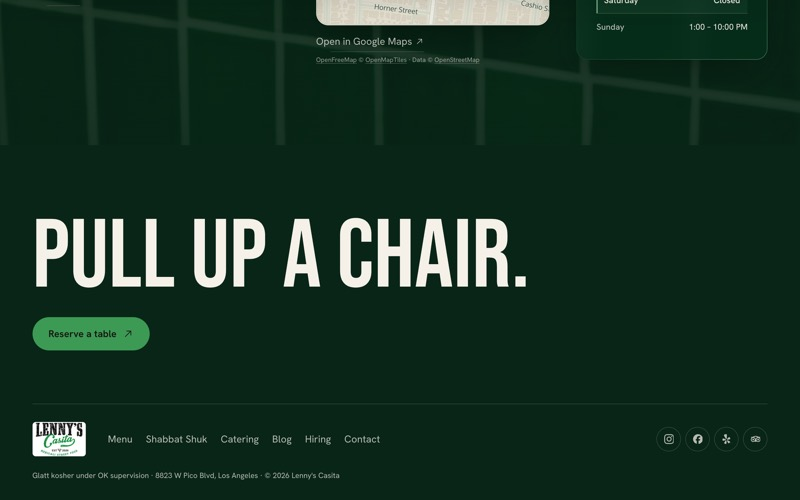
Lenny's CasitaPull up a chair
Process
Every site starts with the one moment people will remember. The pour. The night out. The balance. Then the page gets built around it.
- 01
Story first
Each site has one idea you can feel: matcha filling a cup, a night on Pico, a café that sells calm. Sections come after.
- 02
Motion with a job
Scrolling moves the story forward. If an animation doesn't help, it goes. People who turn on reduced motion get a calm version.
- 03
Every screen
Layouts are checked on small phones, wide monitors and short laptop windows, not just one desktop size.
- 04
Easy to own
Static sites with no server to look after, hosted on GitHub Pages, with media sized so pages stay quick.
What we make05
- 01Scroll-driven sites
- 02Motion & interaction
- 03Website redesigns
- 043D product views
- 05Front-end builds
Next reel
Your place, next.
Until then, the four live sites above are the best way to see how we work.